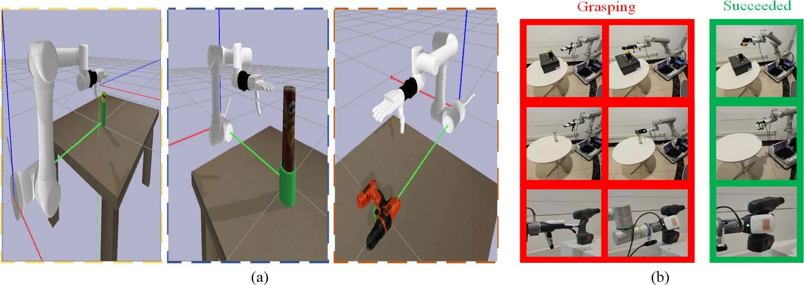
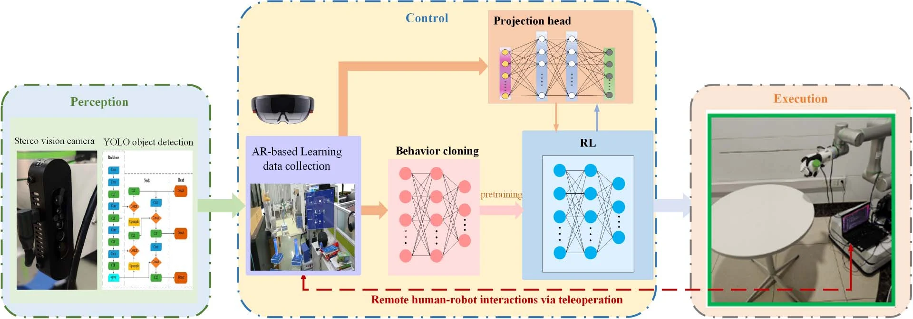
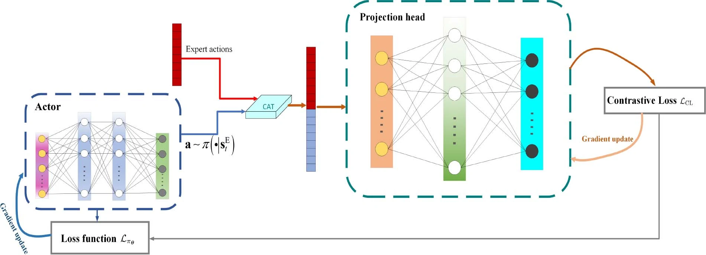
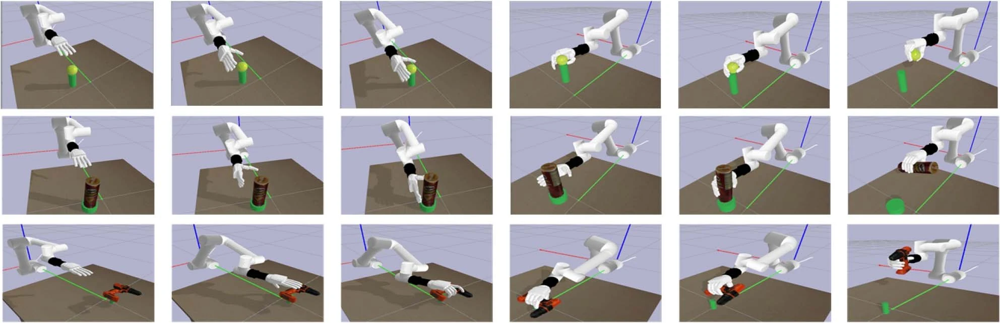
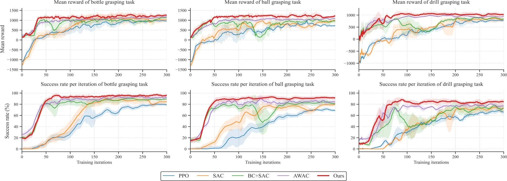
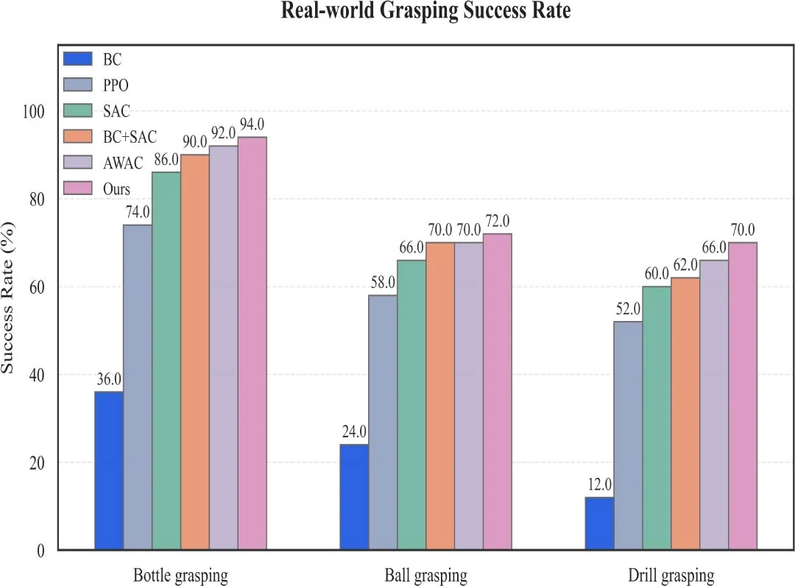

AR demonstrations
Remote arm and hand interaction provides aligned expert states and actions for robot learning.
From remote human demonstrations to dexterous robot skills: behavior cloning meets contrastive reinforcement learning.

An AR interface captures remote human demonstrations. The actor first learns from expert state–action pairs, then improves through interaction with a contrastive objective that retains expert action structure.
Remote arm and hand interaction provides aligned expert states and actions for robot learning.
Supervised actor pretraining provides a demonstration-based starting point for reinforcement learning.
SAC combines task rewards with expert-paired projected actions; the projection head is used during training.



Compare the proposed method with behavior cloning and reinforcement learning baselines across bottle, ball, and drill tasks. Values below are reported in the published paper.
Mean ± standard deviation · three random seeds
Source: published paper, Table IV. Seeds: 42, 97, and 215. Success rates are percentages.

Recorded bottle and ball experiments show policy execution in simulation and on the physical robotic hand. Use the player controls to inspect each rollout.

Selected core modules expose the two-stage learning method, expert-paired contrastive objective, and task rewards. The policy maps a 20-dimensional observation to an 8-dimensional action.
Pretrain the SAC actor using aligned expert observations and actions.
↗Contrastive SACSAC actor–critic updates with a 256–256–128 action projection head.
↗Task rewardDistance, progress, event, and hand-pose alignment components.
↗Two-stage trainingConnect demonstration pretraining and reinforcement learning through an environment factory.
Y. Yang et al., “Scalable Dexterous Robot Learning with AR-based Remote Human-Robot Interactions,” IEEE Transactions on Industrial Electronics, 2026. DOI: 10.1109/TIE.2026.3713549